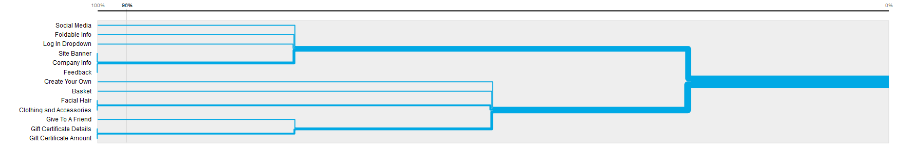

The results of the card sorting of the Foldable.me website was interesting. It said that if the people that worked on the card sorting had to choose a layout for the website, it would be mostly the same. The biggest difference was that people tended to want to incorporate the Basket, which functions as a shopping cart, into the Create section, linking the purchase with the personalization. This is shown below in the following image: 
Check out the card sorting results of site of the company I want to make!